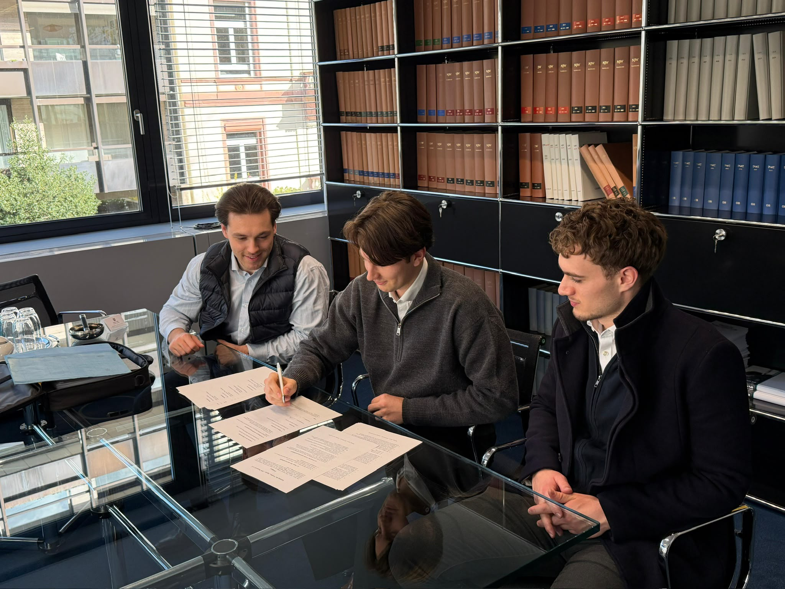

Was ist Agora?
Wir sind eine studentische Initiative an der Goethe-Universität Frankfurt am Main und bieten Studierenden aller Fachrichtungen einen offenen Raum für den Austausch über Fragen aus Philosophie, Politik und Ökonomie (PPE). Unser Ziel ist es, mit der Initiative über das reguläre Studium hinaus Diskussionen anzustoßen, unterschiedliche wissenschaftliche Perspektiven zusammenzubringen und kritisches, eigenständiges Denken zu fördern. Unser Name geht dabei auf die Agora zurück, den Versammlungs- und Marktplatz im antiken Griechenland, auf dem öffentlich gestritten, verhandelt und philosophiert wurde. An diesen Ort erinnert auch der antike Tempel in unserem Logo.
